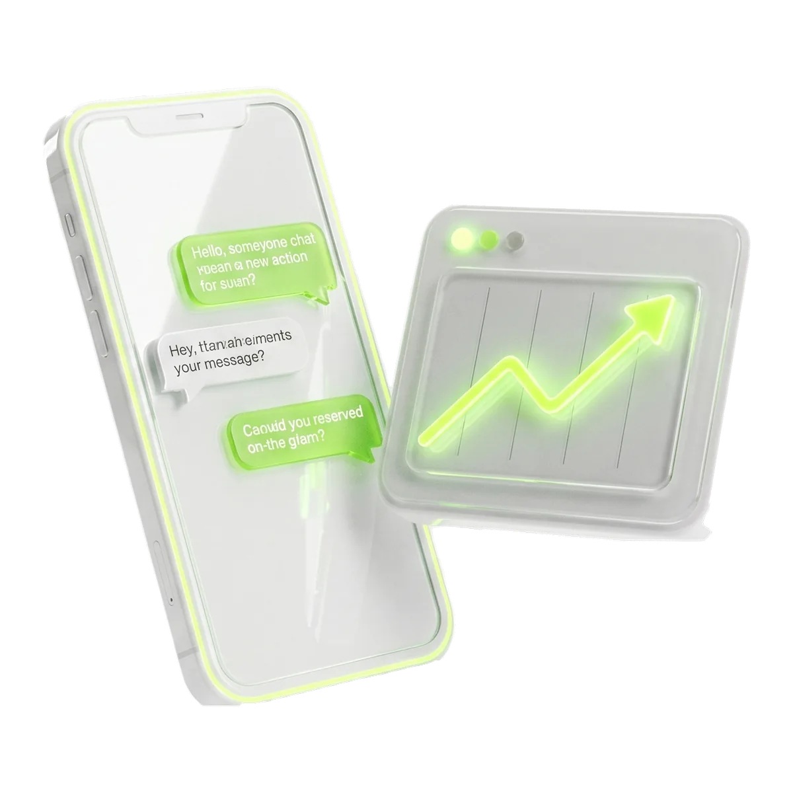
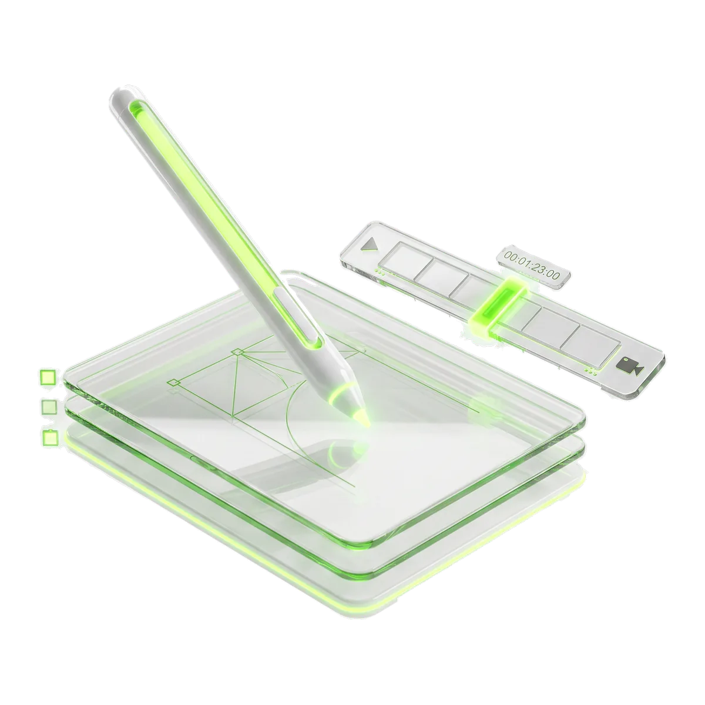
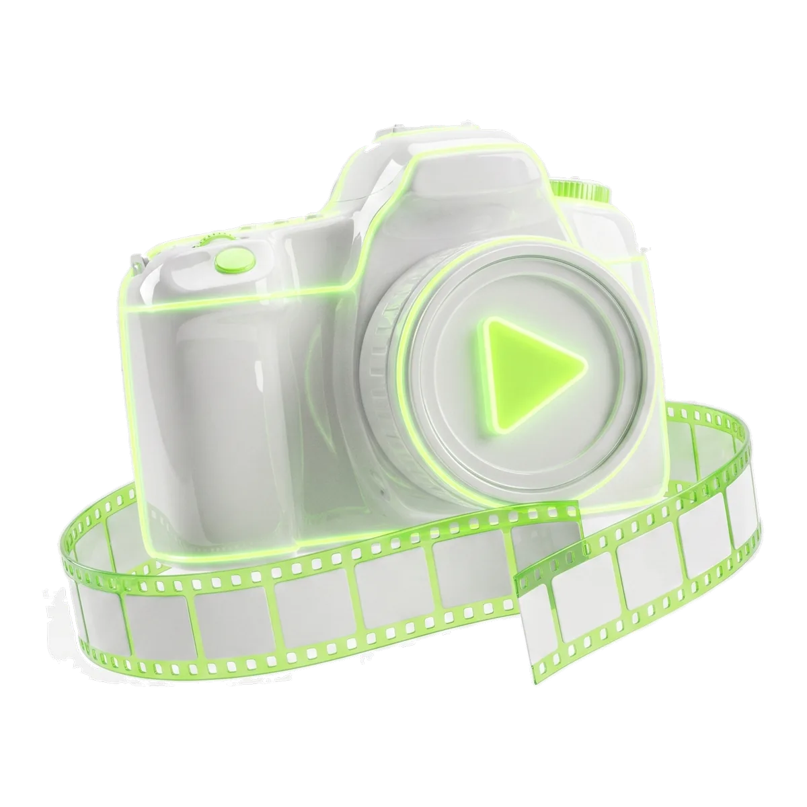
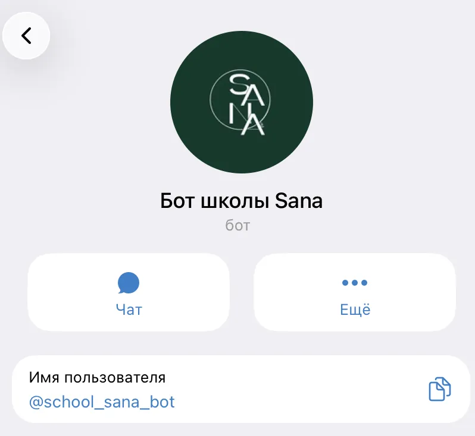
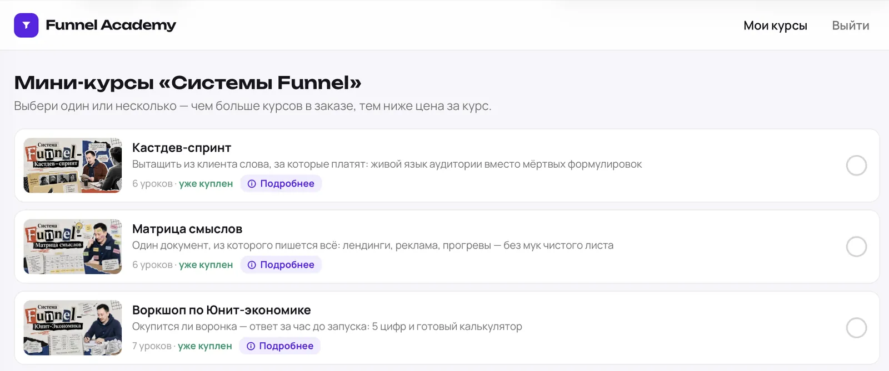
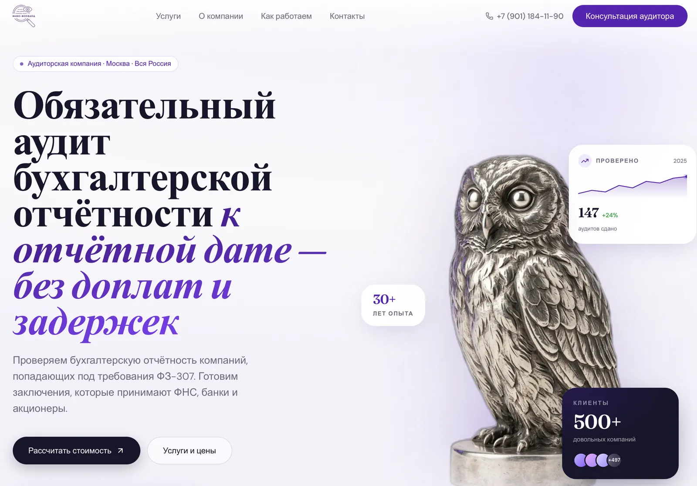
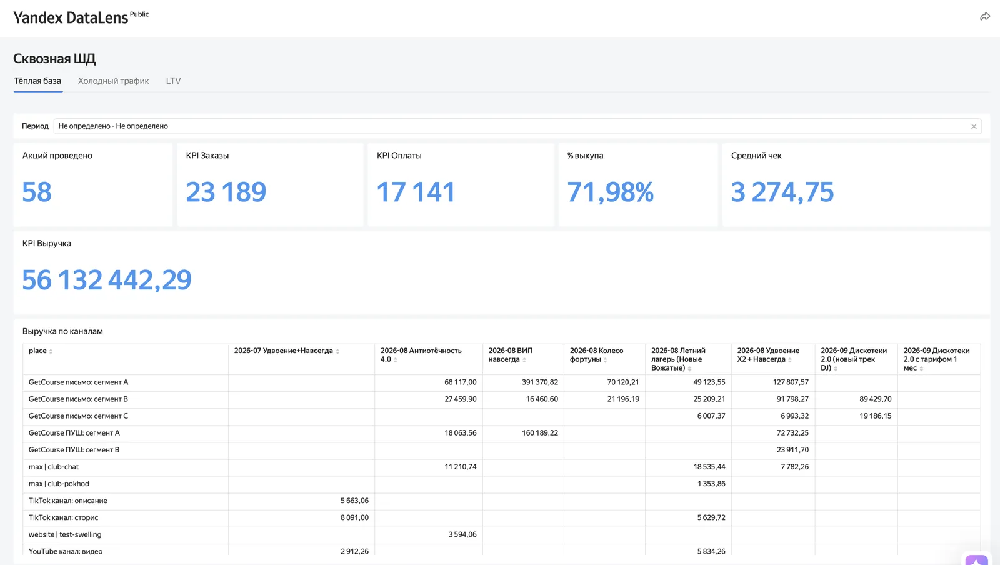

Блок 01AI-менеджер, сквозная аналитика и сопровождение
До конца запуска технический специалист 24/7 на связи: ответы, рассылки, доработка функционала.
200 000 ₽
За весь период запуска

Блок 01До конца запуска технический специалист 24/7 на связи: ответы, рассылки, доработка функционала.

Блок 02Единый фирменный стиль школы для всех баннеров и презентаций. ИИ делает дизайн день в день на уровне профессионального дизайнера.

Блок 035 разных интро и 5 разных аутро на все уроки обучения. Отдельно — ИИ-аватары для блогера или эксперта, 5 000 ₽ за видео.
Готовый сайт по вашему ТЗ, оптимизирован под любые устройства и быстро открывается.
Все задачи, которые предстоит делать на проекте, уже реализовывали командой.

Боты продаж и поддержки для инфобиза и не только.

Своя система выдачи уроков — аналог GetCourse.

Лендинги и многостраничники под ключ.

Дашборды по выручке, заказам и каналам в реальном времени.